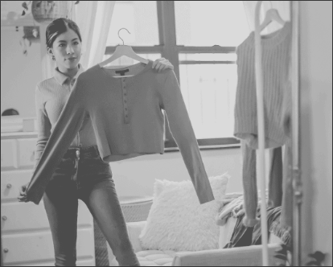

Diplomado en Consultoría y Gestión de Imagen 360
Aprende a crear, cambiar y cuidar la reputación de una empresa, marca, producto o persona. Conviértete en un consultor que ayuda a los demás, generando un alto impacto social, transcendencia profesional y sobre todo, riqueza humana.
-
Inicio: 30 de octubre
-
Fin: 12 de marzo
-
Horas85 horas
-
DíaSábados
-
Horario9:00 a 14:00 hrs
-
Costo$11,500.00 MXN - IVA incluido.
Contenido

Módulo 1
Imagen Pública
Por Victor Vázquez
Aprende a generar una percepción positiva de personas, empresas, organizaciones y marcas. Descubre la responsabilidad social y profesional del consultor de imagen.
Módulo 2
Imagen Personal
Por Mónica Bravo y Loren Meschoulan
Conoce los distintos tipos de cuerpo y morfología de rostros en mujeres y hombres. Define tu estilo y personalidad, aplicando lo aprendido en tu propio proyecto de imagen personal.

Módulo 3
Comunicación Verbal y No Verbal
Por Coca Sevilla
Domina técnicas para expresar tus ideas de forma empática, efectiva y honesta. Mejora tu comunicación personal y profesional.

Módulo 4
Protocolo Social y Profesional
Por Claudia Moreno
Domina las actitudes para crecer profesional y personalmente. Desarrolla hábitos que te harán destacar en cualquier evento. Conecta con personas y establece relaciones a largo plazo.

Módulo 5
Construcción de Imagen en Medios Digitales
Por Roberta Hernández
Aprende los fundamentos para elaborar una estrategia integral de comunicación. Desarrolla Conoce los medios digitales más adecuados, para comunicar de forma efectiva los atributos de tu marca personal.

Módulo 6
Imagen Institucional
Por Jorge Moreno
Desarrolla las habilidades personales y profesionales de tu equipo. Aprende a crea una imagen colectiva que distinga a tu empresa. Implementa dinámicas de motivación, expresión y rituales de interacción.
Módulo 7
Posicionamiento y Branding de la Imagen
Por Manolo Trujillo
Reflexiona sobre la importancia de tener una marca personal. Aprende el paso a paso y desarrolla una marca exitosa. Fortalece tus comunicaciones y relaciones profesionales a través de tu marca.

Módulo 8
Tendencias
Por Coca Sevilla
Aprende las tendencias de imagen personal. Ayuda a personas en tratamiento oncológico a sentirse y verse mejor. Mejora la confianza de personas te talla amplia y transmítela a los demás.
Profesores
Coca Sevilla
Consultora en Imagen Pública y Corporativa
Licenciada en Administración de Empresas con maestría en Mercadotecnia de Utrecht Holanda. Tiene la certificación de más alto nivel como consultor de imagen: AICI Certified Image Master. Fue presidenta de la Asociación Internacional de Consultores de Image.
@coca_sevillacClaudia Merino
Asesora de Imagen Personal y Corporativa
Conferencista internacional, Especialista en Imagen Personal y Protocolo Corporativo. Asesora para personalidades del ámbito político, artístico y ejecutivo. VP de la mesa directiva de la Asociación Internacional de Consultores de Imagen AICI México City 2018-2020. CEO y fundadora de CM Imagen, Estrategia en Imagen y Comunicación.
@asesora_claudiamerinoJorge Moreno
Consultor en Imagen Relaciones Públicas y Negocios
Capacitador y diseñador de imagen, especialista en imagen institucional, imagen colectiva, imagen de marca, diseño y styling en oficinas, etiqueta, protocolo, formador en lenguaje corporal, experto en colorimetría personal, estudio, análisis de estilo y guardarropa. Forma parte parte de la Association of Image Consultants International Capítulo Ciudad de México.
@georgemoreLoren Meschoulan
Coach Transformacional de Imagen y Fashion Stylist
Consultora en Imagen nivel AICI Certified Image Consultant, Diseñadora de joyería y maquillista profesional Style Coach. Miembro activo de la mesa directiva del AICI Capítulo México. En 2017 recibió un reconocimiento como miembro del año por AICI internacional. Imparte clases, talleres, conferencias, diplomados a nivel nacional e internacional.
@loren_meschoulam
Manolo Trujillo
Brand Manager
Especialista en lenguaje corporal, gestión de imagen integral y branding. Asesor de distintas personalidades publicas, políticas y del sector privado. Creador del Día Internacional del Consultor en Imagen. Actualmente es Vicepresidente de vinculación Universitaria, AICI Capítulo Guadalajara. Coordinador de la licenciatura en Imagen en el Instituto Universitario Franco Inglés de México.
@manolotrujilloaMónica Bravo
Personal Shopper y Presidenta de la AICI
Con 15 años de experiencia trabajando con artistas y gente del jet set de Mexico y Estados Unidos. Especialista en Personal Shopper, trabaja desde hace más de 10 años con Antara Fashion Hall y es consejera de moda del periódico Reforma. Actualmente es Presidenta de la Asociación Internacional de Consultores de Imagen Capitulo Ciudad de México.
@monicabravob
Víctor Vázquez
CEO Centro de Imagen y Percepción en México
Licenciado en Comunicación, con maestría en Ingeniería en Imagen Pública. AICI Certified Image Consultant, certificado en Calidad del Servicio por Disney Institute y certificado en Fan Engagent por el Club de Fútbol Barcelona. Presidente de la AICI Capítulo Ciudad de México 2016-2018.
@vicvazmez
Roberta Hernández
Especialista en Marca Personal y Brand Styling
Consultora en Imagen especializada en Marca Personal y Brand Styling. Desde 2012 ha desarrollado estrategias de branding y social media para marcas en Latino América, España y Estados Unidos con su agencia creativa Groovy Estudio. Actualmente es VP de Marketing y Comunicación para AICI Mexico City Chapter periodo 2020-2022.
@robertahernandezgPara más detalles de los módulos y profesores visita nuestra documentación interactiva.